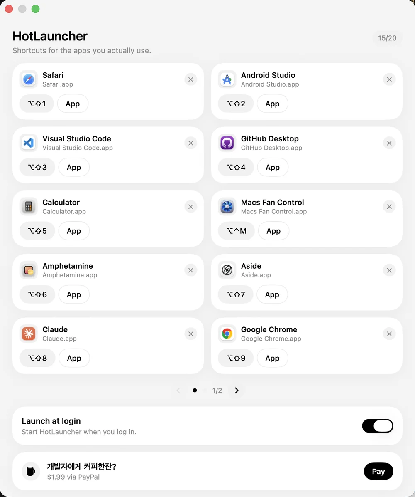

git clone https://github.com/Hwemo-Chung/HotLauncher.git
cd HotLauncher/HotLauncher
bash scripts/bundle.sh
bash scripts/install.sh- macOS 26 · Swift 6.3 · Xcode CLT
- Applications 폴더에 HotLauncher로 설치됩니다
macOS 26(Tahoe)는 Launchpad를 Spotlight 안의 Apps 런처로 바꿨습니다. 아이콘을 배치할 수 없고, 앱을 켜는 데 검색을 기다리는 경우가 많습니다. HotLauncher는 그 화면을 건너뜁니다. 자주 쓰는 앱을 최대 20개, 전역 단축키 하나에 붙입니다.
Apple 공증 전입니다. 미리 빌드한 앱을 사이트에 올리지 않습니다. 소스에서 빌드하세요. 다른 Mac에서는 Gatekeeper가 막을 수 있습니다.

git clone https://github.com/Hwemo-Chung/HotLauncher.git
cd HotLauncher/HotLauncher
bash scripts/bundle.sh
bash scripts/install.sh다른 앱이 앞에 있어도 지정한 키로 앱을 켭니다.
독 아이콘 없음. Settings에서 앱과 키를 고릅니다.
켜면 부팅 후 메뉴바에 올라옵니다.
macOS 26 Tahoe에서 제거됐습니다. 대체는 Spotlight의 Apps입니다. HotLauncher는 그리드를 되살리지 않습니다. 자주 여는 앱에 단축키를 붙입니다.
그러면 이 앱이 필요 없을 수 있습니다. 런처 창 없이, 앱 20개만 키에 붙이고 싶을 때 쓰세요.
Apple 공증 전의 바이너리를 사이트에 올리지 않습니다. GitHub 소스에서 빌드하면 본인 맥에서 서명한 앱이 생깁니다.
macOS 26 이상, Apple Silicon. 테스트는 macOS 26.6.2에서 했습니다.
앱은 무료입니다. 원하면 PayPal로 $1.99 기부가 가능합니다. 기능과 무관합니다.
설치와 버그 제보는 메일로, 소스는 GitHub에 있습니다. tolaria@naver.com · Hwemo-Chung/HotLauncher